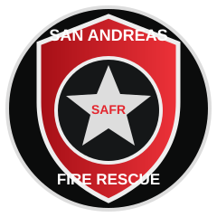

Fire Suppression
Structure, vehicle, brush, and large-scale fire response.
View Division →
SAN ANDREASFIRE RESCUE Member Portal →PROTECTING · SERVING · SAVING LIVES
A professional emergency services organization committed to protecting the lives, property, and communities of San Andreas.
WHO WE ARE
San Andreas Fire Rescue exists to deliver dependable fire suppression, emergency medical services, technical rescue, and community protection across the state.
Our members train to a high standard, work as one team, and put service before self. Every response is an opportunity to make San Andreas safer.
Explore the Department →OUR OPERATIONS
Structure, vehicle, brush, and large-scale fire response.
View Division →Rapid medical response, stabilization, and patient care.
View Division →Specialized rescue for vehicle, rope, confined-space, and structural incidents.
View Division →Highly trained teams for complex and high-risk incidents.
View Division →Education, inspections, prevention programs, and public safety.
View Division →Emergency dispatch and coordinated incident communications.
View Division →YOUR COMMUNITY NEEDS YOU
Join a team built around professionalism, teamwork, training, and service. Applications are open to dedicated members of the San Andreas community.
Begin Your Application →DEPARTMENT RESOURCES
FROM THE DEPARTMENT
Follow the people, apparatus, training, and moments that define San Andreas Fire Rescue.
View Media Gallery →